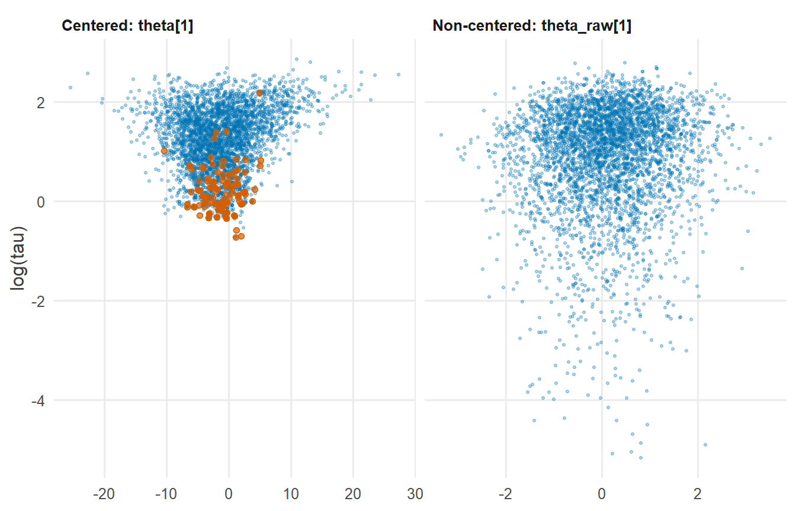
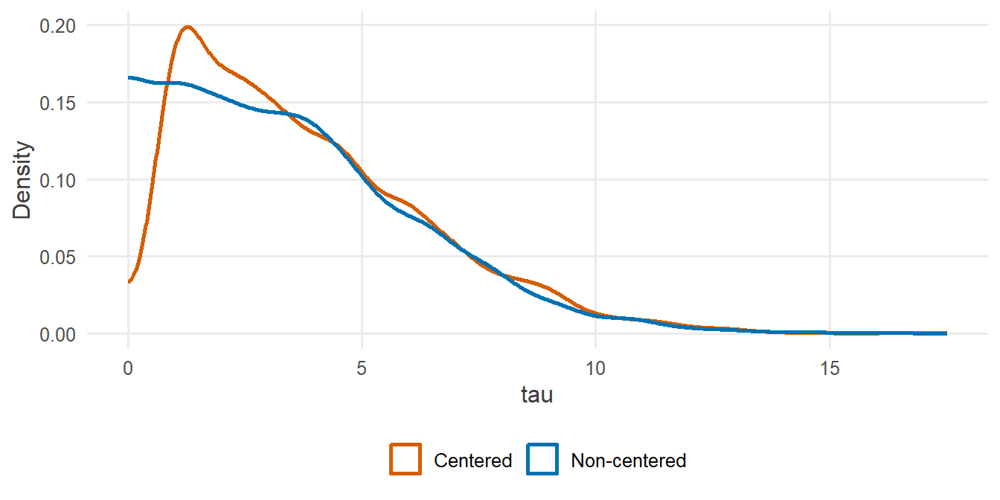

library(tidyverse)
library(cmdstanr)
library(posterior)
library(tidybayes)
source("R/theme.R")
source("R/utils.R")第 12 章 非中心化
为什么一行改写就能消除漏斗？非中心化与中心化是同一个模型吗？什么时候中心化反而更好？
第 11 章看到，中心化写法的层级模型在数据信息弱、组间差异小时会陷入漏斗，产生发散，调高 adapt_delta 也无济于事。
本章给出解决办法：非中心化参数化。它不改变模型，只改变采样器“看待”模型的坐标系。改写只有一行，效果却立竿见影。这正是第 5 章中心化 \(x\) 时就已埋下的伏笔：我们可以通过改写，构造一个 HMC 更容易行走的后验几何。
1 本章要回答的问题
- 为什么一行改写就能消除漏斗？
- 非中心化在数学上和中心化是同一个模型吗？
- 什么时候非中心化反而不如中心化？
2 公式卡片
中心化与非中心化
中心化：直接对 \(\theta_j\) 采样
\[ \theta_j \sim \operatorname{Normal}(\mu,\ \tau) \]
非中心化：对标准化的 \(\theta_j^{\text{raw}}\) 采样，再变换回去
\[ \theta_j^{\text{raw}} \sim \operatorname{Normal}(0,\ 1), \qquad \theta_j = \mu + \tau\, \theta_j^{\text{raw}} \]
两者的似然部分完全相同：
\[ y_j \sim \operatorname{Normal}(\theta_j,\ s_j) \]
为什么两者是同一个模型？如果 \(Z \sim \operatorname{Normal}(0, 1)\)，那么 \(\mu + \tau Z \sim \operatorname{Normal}(\mu, \tau)\)。正态分布的这个性质保证了：\(\theta_j\) 的分布在两种写法下完全相同，只是采样器直接操作的变量不同。
3 模拟数据
使用与第 11 章完全相同的数据：8 项研究，标准误大，组间差异小。
set.seed(2026)
J <- 8
mu_true <- 4
tau_true <- 2
se <- c(15, 10, 16, 11, 9, 11, 10, 18)
theta_true <- rnorm(J, mu_true, tau_true)
y <- rnorm(J, theta_true, se)
stan_data <- list(J = J, y = y, se = se)4 Stan 代码
// Chapter 12: Hierarchical model for group estimates (non-centered parameterization)
//
// y_j ~ Normal(theta_j, se_j) se_j known
// theta_j = mu + tau * theta_raw_j
// theta_raw ~ Normal(0, 1)
// mu ~ Normal(0, 5)
// tau ~ Normal+(0, 5)
data {
int<lower=1> J; // number of studies
vector[J] y; // estimated effect in each study
vector<lower=0>[J] se; // standard error of each estimate
}
parameters {
real mu; // average effect
real<lower=0> tau; // between-study SD
vector[J] theta_raw; // standardized study effects
}
transformed parameters {
vector[J] theta = mu + tau * theta_raw; // true effect in each study
}
model {
target += normal_lpdf(mu | 0, 5);
target += normal_lpdf(tau | 0, 5);
target += std_normal_lpdf(theta_raw); // non-centered: theta_raw does not depend on tau
target += normal_lpdf(y | theta, se);
}与第 11 章的中心化写法 stan/ch11_centered.stan 相比：
| 位置 | 中心化 | 非中心化 |
|---|---|---|
parameters |
vector[J] theta; |
vector[J] theta_raw; |
transformed parameters |
— | vector[J] theta = mu + tau * theta_raw; |
| 先验 | normal_lpdf(theta | mu, tau) |
std_normal_lpdf(theta_raw) |
| 似然 | normal_lpdf(y | theta, se) |
normal_lpdf(y | theta, se)（不变） |
theta 从 parameters 移到了 transformed parameters。它仍然出现在输出中，汇总和画图的方式与之前完全一样。std_normal_lpdf(x) 等价于 normal_lpdf(x | 0, 1)，但计算更快。
5 R 端运行
mod_centered <- cmdstan_model("stan/ch11_centered.stan")
mod_noncentered <- cmdstan_model("stan/ch12_noncentered.stan")
fit_centered <- mod_centered$sample(
data = stan_data, seed = 2026, chains = 4, parallel_chains = 4, refresh = 0
)#> Running MCMC with 4 parallel chains...
#>
#> Chain 1 finished in 0.1 seconds.
#> Chain 2 finished in 0.1 seconds.
#> Chain 3 finished in 0.1 seconds.
#> Chain 4 finished in 0.1 seconds.
#>
#> All 4 chains finished successfully.
#> Mean chain execution time: 0.1 seconds.
#> Total execution time: 0.4 seconds.fit_noncentered <- mod_noncentered$sample(
data = stan_data, seed = 2026, chains = 4, parallel_chains = 4, refresh = 0
)#> Running MCMC with 4 parallel chains...
#>
#> Chain 1 finished in 0.0 seconds.
#> Chain 2 finished in 0.0 seconds.
#> Chain 3 finished in 0.0 seconds.
#> Chain 4 finished in 0.0 seconds.
#>
#> All 4 chains finished successfully.
#> Mean chain execution time: 0.0 seconds.
#> Total execution time: 0.2 seconds.6 后验整理与可视化
6.1 诊断对比
diag_row <- function(fit, label) {
tibble(
parameterization = label,
divergences = sum(fit$diagnostic_summary()$num_divergent),
tau_rhat = fit$summary("tau", "rhat")$rhat,
tau_ess_bulk = fit$summary("tau", "ess_bulk")$ess_bulk,
tau_ess_tail = fit$summary("tau", "ess_tail")$ess_tail
)
}
bind_rows(
diag_row(fit_centered, "Centered"),
diag_row(fit_noncentered, "Non-centered")
) |>
knitr::kable(digits = 2)| parameterization | divergences | tau_rhat | tau_ess_bulk | tau_ess_tail |
|---|---|---|---|---|
| Centered | 198 | 1.05 | 99.85 | 92.17 |
| Non-centered | 0 | 1.00 | 2064.55 | 1574.21 |
发散从 198 次降到了 0 次，\(\tau\) 的有效样本量成倍增加。（非中心化之后偶尔仍可能出现一两次孤立的发散；只要它们不再成片集中在某个区域，就可以把 adapt_delta 略微调高到 0.9 或 0.95 来消除。）
6.2 采样器眼中的几何
geometry <- bind_rows(
fit_centered$draws(c("tau", "theta[1]"), format = "df") |>
as_tibble() |>
transmute(tau, coordinate = `theta[1]`, version = "Centered: theta[1]",
divergent = fit_centered$sampler_diagnostics(format = "df")$divergent__ == 1),
fit_noncentered$draws(c("tau", "theta_raw[1]"), format = "df") |>
as_tibble() |>
transmute(tau, coordinate = `theta_raw[1]`, version = "Non-centered: theta_raw[1]",
divergent = fit_noncentered$sampler_diagnostics(format = "df")$divergent__ == 1)
)
ggplot(geometry, aes(x = coordinate, y = log(tau))) +
geom_point(data = filter(geometry, !divergent),
colour = f2s_colors[["post"]], alpha = 0.25, size = 0.7) +
geom_point(data = filter(geometry, divergent),
colour = f2s_colors[["truth"]], size = 1.5) +
facet_wrap(~ version, scales = "free_x") +
labs(x = NULL, y = "log(tau)")
在非中心化的坐标中，\(\theta_j^{\text{raw}}\) 的先验是标准正态，与 \(\tau\) 无关。\(\tau\) 变小时，\(\theta_j^{\text{raw}}\) 的范围并不收缩，采样器面对的是一个大致“圆润”的分布，用同一个步长就能在各处顺利行走。
6.3 \(\tau\) 的后验
bind_rows(
fit_centered |> spread_draws(tau) |> mutate(version = "Centered"),
fit_noncentered |> spread_draws(tau) |> mutate(version = "Non-centered")
) |>
ggplot(aes(x = tau, colour = version)) +
geom_density(linewidth = 0.9, bounds = c(0, Inf)) +
scale_colour_manual(values = c(Centered = f2s_colors[["truth"]],
`Non-centered` = f2s_colors[["post"]])) +
labs(x = "tau", y = "Density", colour = NULL)
bind_rows(
fit_centered$summary("tau", ~ quantile(.x, c(0.05, 0.25, 0.5))) |> mutate(version = "Centered"),
fit_noncentered$summary("tau", ~ quantile(.x, c(0.05, 0.25, 0.5))) |> mutate(version = "Non-centered")
)#> # A tibble: 2 × 5
#> variable `5%` `25%` `50%` version
#> <chr> <dbl> <dbl> <dbl> <chr>
#> 1 tau 0.886 1.77 3.29 Centered
#> 2 tau 0.264 1.52 3.21 Non-centered中心化写法得到的 \(\tau\) 下分位数偏高：它在瓶颈处寸步难行，低估了 \(\tau\) 很小的可能性。这正是第 11 章所说的“发散带来偏差”。
6.4 Neal 漏斗的非中心化
同样的改写也适用于 Neal 漏斗：
// Chapter 12: Neal's funnel (non-centered parameterization)
//
// v_raw, x_raw_k ~ Normal(0, 1)
// v = 3 * v_raw
// x_k = exp(v / 2) * x_raw_k
parameters {
real v_raw;
vector[9] x_raw;
}
transformed parameters {
real v = 3 * v_raw;
vector[9] x = exp(v / 2) * x_raw;
}
model {
target += std_normal_lpdf(v_raw);
target += std_normal_lpdf(x_raw);
}fit_neal_nc <- cmdstan_model("stan/ch12_neal_noncentered.stan")$sample(
seed = 2026, chains = 4, parallel_chains = 4, refresh = 0
)#> Running MCMC with 4 parallel chains...
#>
#> Chain 1 finished in 0.0 seconds.
#> Chain 2 finished in 0.0 seconds.
#> Chain 3 finished in 0.0 seconds.
#> Chain 4 finished in 0.0 seconds.
#>
#> All 4 chains finished successfully.
#> Mean chain execution time: 0.0 seconds.
#> Total execution time: 0.2 seconds.tibble(
quantile = c("1%", "5%", "50%", "95%", "99%"),
non_centered = quantile(fit_neal_nc$draws("v", format = "draws_matrix"),
c(0.01, 0.05, 0.5, 0.95, 0.99)),
true_normal = qnorm(c(0.01, 0.05, 0.5, 0.95, 0.99), 0, 3)
)#> # A tibble: 5 × 3
#> quantile non_centered true_normal
#> <chr> <dbl> <dbl>
#> 1 1% -6.93 -6.98
#> 2 5% -5.11 -4.93
#> 3 50% 0.00956 0
#> 4 95% 5.00 4.93
#> 5 99% 7.11 6.98\(v\) 的分位数现在与真实分布 \(\operatorname{Normal}(0, 3)\) 吻合，第 11 章中被截断的左尾回来了。
7 为什么这样写
7.1 为什么一行改写就能消除漏斗？
关键在于依赖关系被移到了哪里。
- 中心化写法中，\(\theta_j\) 与 \(\tau\) 的依赖写在先验里：\(\theta_j \sim \operatorname{Normal}(\mu, \tau)\)。\(\tau\) 一变小，\(\theta_j\) 的允许范围立刻收窄，这就是漏斗。
- 非中心化写法中，\(\theta_j^{\text{raw}}\) 的先验 \(\operatorname{Normal}(0, 1)\) 与 \(\tau\) 无关。依赖关系被移到了确定性变换 \(\theta_j = \mu + \tau\theta_j^{\text{raw}}\) 和似然里。
当数据信息很弱时，似然对后验形状的影响很小，后验的几何主要由先验决定。非中心化之后，先验部分是一个各向同性的标准正态分布，采样器面对的几何因此变得规整。
7.2 同一个模型，不同的坐标系
非中心化没有改变任何统计假设，\(\theta_j\)、\(\mu\)、\(\tau\) 的联合后验在两种写法下完全相同。改变的只是采样器在哪个空间里移动。
这和第 5 章中心化 \(x\)、第 3 章约束变换的思想一脉相承：
| 章节 | 改写 | 消除的几何问题 |
|---|---|---|
| 第 3 章 | \(\sigma = \exp(u)\) | 边界 |
| 第 5 章 | \(x^c = x - \bar{x}\) | 参数之间的强相关（斜脊） |
| 本章 | \(\theta = \mu + \tau\theta^{\text{raw}}\) | 尺度随参数变化（漏斗） |
同一个模型，换一种参数化，推断结论不变，但采样器的工作轻松了很多。这是用 Stan 建模时最重要的一种思维方式。
7.3 什么时候中心化反而更好？
非中心化不是万能的。当每组数据信息很强时，情况正好反过来：似然把每个 \(\theta_j\) 牢牢钉在 \(y_j\) 附近。此时在非中心化坐标中，\(\theta_j^{\text{raw}} = (\theta_j - \mu)/\tau\) 会随着 \(\tau\) 的变化而反向伸缩，非中心化写法本身产生了一个“倒过来”的漏斗。
用一份信息很强的数据来验证（标准误为 1，组间标准差为 10）：
set.seed(2026)
theta_strong <- rnorm(J, mu_true, 10)
se_strong <- rep(1, J)
y_strong <- rnorm(J, theta_strong, se_strong)
data_strong <- list(J = J, y = y_strong, se = se_strong)
fit_c_strong <- mod_centered$sample(data = data_strong, seed = 2026, chains = 4,
parallel_chains = 4, refresh = 0)#> Running MCMC with 4 parallel chains...
#>
#> Chain 1 finished in 0.0 seconds.
#> Chain 2 finished in 0.0 seconds.
#> Chain 3 finished in 0.0 seconds.
#> Chain 4 finished in 0.0 seconds.
#>
#> All 4 chains finished successfully.
#> Mean chain execution time: 0.0 seconds.
#> Total execution time: 0.3 seconds.fit_nc_strong <- mod_noncentered$sample(data = data_strong, seed = 2026, chains = 4,
parallel_chains = 4, refresh = 0)#> Running MCMC with 4 parallel chains...
#>
#> Chain 1 finished in 0.1 seconds.
#> Chain 2 finished in 0.1 seconds.
#> Chain 3 finished in 0.1 seconds.
#> Chain 4 finished in 0.1 seconds.
#>
#> All 4 chains finished successfully.
#> Mean chain execution time: 0.1 seconds.
#> Total execution time: 0.3 seconds.efficiency_row <- function(fit, label) {
tibble(
parameterization = label,
divergences = sum(fit$diagnostic_summary()$num_divergent),
mu_ess_bulk = fit$summary("mu", "ess_bulk")$ess_bulk,
tau_ess_bulk = fit$summary("tau", "ess_bulk")$ess_bulk,
total_leapfrog = sum(fit$sampler_diagnostics(format = "df")$n_leapfrog__)
)
}
bind_rows(
efficiency_row(fit_c_strong, "Centered"),
efficiency_row(fit_nc_strong, "Non-centered")
) |>
knitr::kable(digits = 0)| parameterization | divergences | mu_ess_bulk | tau_ess_bulk | total_leapfrog |
|---|---|---|---|---|
| Centered | 0 | 5734 | 6524 | 27252 |
| Non-centered | 0 | 659 | 761 | 101680 |
这一次，中心化写法用更少的跳步得到了多得多的有效样本。
一个实用的判断规则：
| 每组数据的信息 | 推荐写法 |
|---|---|
| 弱（每组观测少、标准误大，或组间差异小） | 非中心化 |
| 强（每组观测多、标准误远小于组间差异） | 中心化 |
| 各组差别很大 | 可以对不同的组分别使用两种写法 |
在实际研究中，层级模型最常用于“组很多、每组数据不多”的情形，所以 Stan 模型库与本系列的代码约定把非中心化作为层级模型的默认写法。当诊断提示效率低下且每组数据充足时，再考虑换回中心化。
8 常见错误
| 错误写法 | 后果 | 正确写法 |
|---|---|---|
非中心化后仍写 target += normal_lpdf(theta | mu, tau); |
先验被重复施加，并且缺少对 theta_raw 的先验 |
只写 std_normal_lpdf(theta_raw) |
把 theta 留在 parameters 块，又在别处重新赋值 |
编译错误：参数不能被赋值 | theta 放进 transformed parameters |
对 theta_raw 设置非标准正态的先验 |
改变了模型 | theta_raw 必须是标准正态 |
| 认为非中心化总是更好 | 数据信息强时效率反而下降 | 根据每组信息的强弱选择 |
汇总时去找 theta_raw 作为组效应 |
解释错误：它是标准化后的量 | 汇总 theta |
9 练习
练习 1 两种写法给出同一个先验
不用 Stan，在 R 中分别按中心化和非中心化的方式，从先验 \(\mu \sim \operatorname{Normal}(0, 5)\)、\(\tau \sim \operatorname{Normal}^{+}(0, 5)\) 中模拟 \(\theta_1\)，比较两者的分布。
提示参考答案
set.seed(2026)
n_sim <- 1e5
mu_sim <- rnorm(n_sim, 0, 5)
tau_sim <- abs(rnorm(n_sim, 0, 5))
theta_centered <- rnorm(n_sim, mu_sim, tau_sim)
theta_noncentered <- mu_sim + tau_sim * rnorm(n_sim)
tibble(
version = c("Centered", "Non-centered"),
mean = c(mean(theta_centered), mean(theta_noncentered)),
sd = c(sd(theta_centered), sd(theta_noncentered)),
q05 = c(quantile(theta_centered, 0.05), quantile(theta_noncentered, 0.05)),
q95 = c(quantile(theta_centered, 0.95), quantile(theta_noncentered, 0.95))
)#> # A tibble: 2 × 5
#> version mean sd q05 q95
#> <chr> <dbl> <dbl> <dbl> <dbl>
#> 1 Centered 0.0340 7.05 -11.3 11.3
#> 2 Non-centered -0.0220 7.05 -11.3 11.2两者在模拟误差范围内完全相同。非中心化不改变模型，只改变参数化。
练习 2 把第 10 章的模型改写成非中心化
把第 10 章以学生为观测单位的学校模型改写为非中心化形式。
提示参考答案
参考写法保存在 stan/ch12_ex2_schools_nc.stan：
// Chapter 12, Exercise 2: the Chapter 10 school model, non-centered
//
// y_i ~ Normal(alpha[school_i], sigma)
// alpha = mu + tau * alpha_raw
// alpha_raw ~ Normal(0, 1)
data {
int<lower=0> N; // number of students
int<lower=1> J; // number of schools
array[N] int<lower=1, upper=J> school; // school of each student
vector[N] y; // math score
}
parameters {
real mu;
real<lower=0> tau;
vector[J] alpha_raw; // standardized school effects
real<lower=0> sigma;
}
transformed parameters {
vector[J] alpha = mu + tau * alpha_raw; // school means
}
model {
target += normal_lpdf(mu | 70, 20);
target += exponential_lpdf(tau | 0.1);
target += exponential_lpdf(sigma | 0.1);
target += std_normal_lpdf(alpha_raw);
target += normal_lpdf(y | alpha[school], sigma);
}结构与本章完全相同：alpha_raw 是参数，alpha 在 transformed parameters 中由 mu + tau * alpha_raw 得到，似然中照常使用 alpha[school]。用第 10 章的数据生成方式检验：
set.seed(2026)
n_j <- c(2, 3, 4, 5, 6, 8, 10, 12, 15, 20, 30, 40)
alpha_sch <- rnorm(12, 70, 10)
schools <- tibble(school = rep(1:12, times = n_j)) |>
mutate(score = rnorm(n(), alpha_sch[school], 10))
fit_sch_nc <- cmdstan_model("stan/ch12_ex2_schools_nc.stan")$sample(
data = list(N = nrow(schools), J = 12, school = schools$school, y = schools$score),
seed = 2026, chains = 4, parallel_chains = 4, refresh = 0
)#> Running MCMC with 4 parallel chains...
#>
#> Chain 1 finished in 0.1 seconds.
#> Chain 2 finished in 0.1 seconds.
#> Chain 3 finished in 0.1 seconds.
#> Chain 4 finished in 0.1 seconds.
#>
#> All 4 chains finished successfully.
#> Mean chain execution time: 0.1 seconds.
#> Total execution time: 0.2 seconds.fit_sch_nc$summary(c("mu", "tau", "sigma"))#> # A tibble: 3 × 10
#> variable mean median sd mad q5 q95 rhat ess_bulk ess_tail
#> <chr> <dbl> <dbl> <dbl> <dbl> <dbl> <dbl> <dbl> <dbl> <dbl>
#> 1 mu 64.2 64.2 2.41 2.29 60.2 68.2 1.00 1191. 1655.
#> 2 tau 7.39 7.14 2.14 1.94 4.38 11.4 1.00 1306. 1957.
#> 3 sigma 10.2 10.1 0.619 0.617 9.21 11.2 1.00 4308. 2448.结果与第 10 章的中心化写法一致。
练习 3 theta_raw 的后验说明了什么？
查看 fit_noncentered 中 theta_raw 的后验汇总。它们的后验均值和标准差接近多少？为什么？
提示参考答案
fit_noncentered$summary("theta_raw", "mean", "sd")#> # A tibble: 8 × 3
#> variable mean sd
#> <chr> <dbl> <dbl>
#> 1 theta_raw[1] 0.111 0.968
#> 2 theta_raw[2] -0.0316 0.948
#> 3 theta_raw[3] 0.0253 0.977
#> 4 theta_raw[4] -0.0534 0.936
#> 5 theta_raw[5] 0.0855 0.930
#> 6 theta_raw[6] -0.0535 0.925
#> 7 theta_raw[7] -0.579 0.943
#> 8 theta_raw[8] 0.302 0.991各个 theta_raw 的后验标准差都接近 1，后验均值大多接近 0（观测值最极端的第 7 项研究略有偏离），几乎就是它们的先验。原因是数据信息很弱：每项研究的标准误远大于组间差异，数据几乎无法区分各项研究的真实效应。这也正是非中心化在这里有效的原因：后验的几何主要由标准正态先验决定，非常规整。
练习 4 用 offset 与 multiplier 实现非中心化
Stan 提供了一种简洁的语法，可以在声明中直接指定仿射变换：vector<offset=mu, multiplier=tau>[J] theta;。用它改写模型，并与本章的写法比较。
提示参考答案
参考写法保存在 stan/ch12_ex4_offset.stan：
parameters {
real mu;
real<lower=0> tau;
vector<offset=mu, multiplier=tau>[J] theta; // affine transform declared here
}fit_offset <- cmdstan_model("stan/ch12_ex4_offset.stan")$sample(
data = stan_data, seed = 2026, chains = 4, parallel_chains = 4, refresh = 0
)#> Running MCMC with 4 parallel chains...
#>
#> Chain 1 finished in 0.0 seconds.
#> Chain 2 finished in 0.0 seconds.
#> Chain 3 finished in 0.0 seconds.
#> Chain 4 finished in 0.0 seconds.
#>
#> All 4 chains finished successfully.
#> Mean chain execution time: 0.0 seconds.
#> Total execution time: 0.3 seconds.bind_rows(
diag_row(fit_noncentered, "theta_raw (explicit)"),
diag_row(fit_offset, "offset / multiplier")
) |>
knitr::kable(digits = 2)| parameterization | divergences | tau_rhat | tau_ess_bulk | tau_ess_tail |
|---|---|---|---|---|
| theta_raw (explicit) | 0 | 1 | 2064.55 | 1574.21 |
| offset / multiplier | 1 | 1 | 2213.36 | 1498.93 |
offset 和 multiplier 让 Stan 在内部对 \((\theta_j - \mu)/\tau\) 采样，而 model 块的写法与中心化完全相同：normal_lpdf(theta | mu, tau)。这和第 3 章的 <lower=0> 是同一种机制：在声明中指定变换，Stan 自动处理雅可比项。
本系列在教学中使用显式的 theta_raw 写法，因为它把“对什么采样、怎样变换回来”逐行写了出来；熟悉之后，offset/multiplier 是更简洁的选择。
10 小结
- 非中心化：\(\theta_j^{\text{raw}} \sim \operatorname{Normal}(0, 1)\)，\(\theta_j = \mu + \tau\theta_j^{\text{raw}}\)。与中心化是同一个模型，只是采样的坐标不同。
- 它把 \(\theta_j\) 与 \(\tau\) 的依赖从先验移到确定性变换里，数据信息弱时消除了漏斗。
- 数据信息强时情况相反，中心化更有效。层级模型通常“组多、每组数据少”，因此以非中心化为默认。
- 参数化是建模的一部分：构造一个 HMC 能走的后验几何，与写出正确的模型同样重要。
11 延伸
- 下一章进入第四单元：第 13 章 连续潜变量。潜变量模型中的潜变量，同样常用非中心化的方式声明。
- 当随机效应不止一个（比如随机截距和随机斜率）并且彼此相关时，非中心化需要配合 Cholesky 分解，Stan 模型库中有完整示例。
12 参考资料
- 层级模型参数化的一般理论见 Papaspiliopoulos 等 (2007)。
- 非中心化在 HMC 中的作用见 Betancourt & Girolami (2015)。
- Stan User’s Guide 的 Efficiency Tuning 一章中 Reparameterization 一节讨论了 Neal 漏斗与层级模型的非中心化 (Stan Development Team, 2026b)。
- Stan Reference Manual 中关于
offset与multiplier仿射变换的说明 (Stan Development Team, 2026a)。 - Statistical Rethinking 第 13 章讨论了发散转移与非中心化先验 (McElreath, 2020)。
Betancourt, M., & Girolami, M. (2015). Hamiltonian Monte Carlo for Hierarchical Models. 收入 S. K. Upadhyay, U. Singh, D. K. Dey, & A. Loganathan (编), Current Trends in Bayesian Methodology with Applications (页 79～101). CRC Press.
McElreath, R. (2020). Statistical Rethinking: A Bayesian Course with Examples in R and Stan (2 版). CRC Press.
Papaspiliopoulos, O., Roberts, G. O., & Sköld, M. (2007). A General Framework for the Parametrization of Hierarchical Models. Statistical Science, 22(1), 59～73. https://doi.org/10.1214/088342307000000014
Stan Development Team. (2026a). Stan Reference Manual (Version 2.40). https://mc-stan.org/docs/reference-manual/
Stan Development Team. (2026b). Stan User’s Guide (Version 2.40). https://mc-stan.org/docs/stan-users-guide/